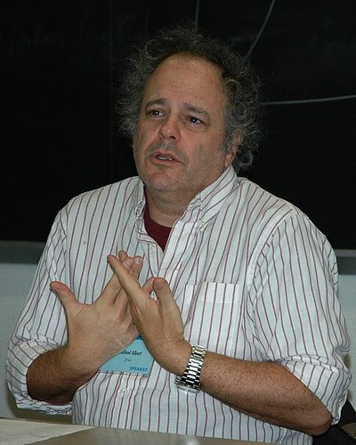

Ideologies / Left
What is Participatory Economics?
Participatory Economics is a political ideology in the Left family. A model, often shortened to parecon, that rejects both markets and central planning. Workplaces and neighbourhoods are run by councils in which each person has a say in proportion to how much a decision affects them. Jobs are balanced so that everyone shares both empowering and tedious tasks, and people are paid for effort and sacrifice, not for property, power or output. Councils propose and revise what they will produce and consume over several rounds until the plans fit together.
An economy planned from below by councils of workers and consumers.
Defined from: Michael Albert and Robin Hahnel, The Political Economy of Participatory Economics (1991)
See how close you are to Participatory Economics Dare a friend to answer as one


Where Participatory Economics stands on 13 axes
Each axis runs from 0 to 100. A score of 50 is the middle. On a classic compass it sits in the Libertarian Left quadrant.
| Axis | Position | Score | In words |
|---|---|---|---|
| EconomyMarket to Planned | 85 | Very strongly Planned | |
| OwnershipPrivate to Collective | 100 | Very strongly Collective | |
| RightsLiberty to Security | 15 | Very strongly Liberty | |
| GovernmentDemocracy to Autocracy | 0 | Very strongly Democracy | |
| StructureDecentralised to Centralised | 10 | Very strongly Decentralised | |
| NationInternationalist to Nationalist | 10 | Very strongly Internationalist | |
| ImmigrationMulticulturalist to Assimilationist | 20 | Strongly Multiculturalist | |
| ValuesProgressive to Traditional | 15 | Very strongly Progressive | |
| TechnologyAccelerationist to Precautionary | 40 | Leans Accelerationist | |
| EnvironmentIndustrialist to Environmentalist | 55 | Balanced | |
| ReligionSecular to Religious | 5 | Very strongly Secular | |
| MilitaryPacifist to Militarist | 20 | Strongly Pacifist | |
| TradeFree Trade to Protectionist | 45 | Balanced |
Ideologies closest to Participatory Economics
- Inclusive Democracy91% alike
- Anarcho Communism90% alike
- Anarcho Syndicalism90% alike
- Council Communism87% alike
- Black Feminism87% alike
Its opposite on this map is Kokutai Thought, at 15%.
Parties near Participatory Economics
- International Workers' AssociationGermany. The Principles of Revolutionary Syndicalism (1922)89% alike
- Anti Authoritarian InternationalSwitzerland. Resolutions of the Saint Imier Congress (1872)86% alike
- Dielo Truda GroupFrance. Organisational Platform of the General Union of Anarchists (1926)85% alike
- General Confederation of Labour of 1906France. The Charter of Amiens (1906)84% alike
Common questions
What is Participatory Economics?
Participatory Economics is a political ideology in the Left family. A model, often shortened to parecon, that rejects both markets and central planning. Workplaces and neighbourhoods are run by councils in which each person has a say in proportion to how much a decision affects them. Jobs are balanced so that everyone shares both empowering and tedious tasks, and people are paid for effort and sacrifice, not for property, power or output. Councils propose and revise what they will produce and consume over several rounds until the plans fit together.
What does Participatory Economics believe?
In one line: An economy planned from below by councils of workers and consumers. Its strongest positions are Collective, Democracy, Secular. A model, often shortened to parecon, that rejects both markets and central planning. Workplaces and neighbourhoods are run by councils in which each person has a say in proportion to how much a decision affects them. Jobs are balanced so that everyone shares both empowering and tedious tasks, and people are paid for effort and sacrifice, not for property, power or output. Councils propose and revise what they will produce and consume over several rounds until the plans fit together.
Who founded Participatory Economics?
Participatory Economics is defined here from The Political Economy of Participatory Economics (1991) by Michael Albert and Robin Hahnel. The thinker most tied to it is Michael Albert (born 1947).
Is Participatory Economics left wing or right wing?
On a classic two axis compass Participatory Economics falls in the Libertarian Left quadrant, which means the economic left and the libertarian side. Left and right hide a lot, though, which is why EthosScales scores it on thirteen separate axes.
How is Participatory Economics different from Inclusive Democracy?
They are close: 91% alike. The biggest gaps are on Environment, where Participatory Economics scores 55 and Inclusive Democracy scores 75, and Economy, where Participatory Economics scores 85 and Inclusive Democracy scores 75. On each axis, 0 is one end and 100 is the other.
Think this is wrong? Suggest a correction. The scores are editorial estimates.